Какой колорант добавить — и сколько процентов
Технолог замеряет эталон и образец спектрофотометром. Система показывает на графике, куда сместился цвет, и подсказывает коррекцию. Попробуйте справа: возьмите точку и сдвиньте её.
Демонстрация принципа: коэффициенты учебные. В рабочей версии дозировка считается по вашей базе колорантов, вашему прибору и вашей рецептуре.
Программа собирается под ваше производство
Это не готовый «коробочный» продукт. Программа проектируется под конкретное предприятие и его особенности: порошковые или жидкие краски, а при необходимости и другой процесс, оборудование, приборы, сотрудников. Всё необходимое обсуждается при составлении технического задания (ТЗ).
Процессы и этапы
Путь заявки, статусы, поля и документы настраиваются под ваши процессы, а не наоборот.
Индивидуальные роли
Для каждой роли можно отредактировать доступ, расширить его или создать собственную роль.
Приборы и датчики
Подключаются ваши линии, печи, спектрофотометры и датчики, база колорантов и RAL.
Нейросеть под задачу
Размер и состав сети подбираются под масштаб предприятия и задачи, обучение на ваших данных.
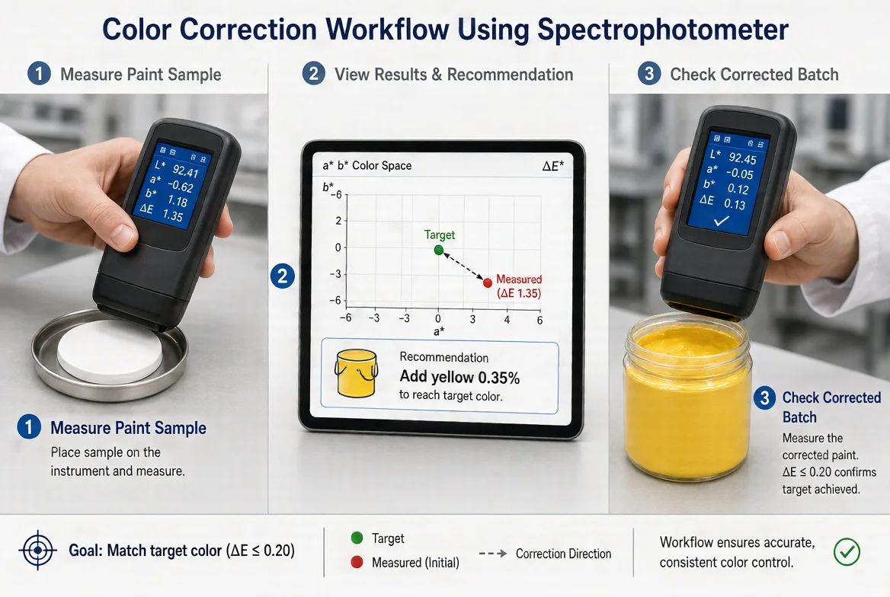
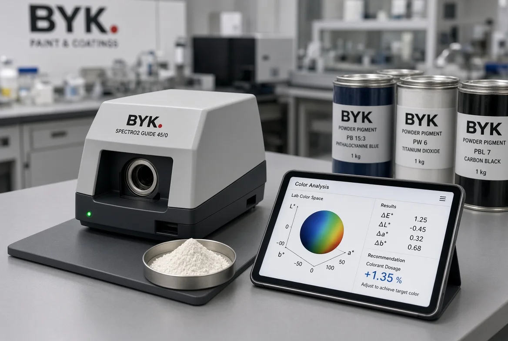
Как это работает: четыре шага
От замера до подтверждённого результата. Технологу не нужно считать в уме: он видит цвет, график и готовую подсказку.
Замер эталона и образца
Прибор снимает эталон, затем образец порошковой краски. Эталон встаёт в центр графика, а точка образца показывает, в какую сторону цвет ушёл: к жёлтому или синему, к красному или зелёному, светлее или темнее.

Показать пальцем на графике
На планшете график a*b* крупный и наглядный. Технолог касается точки или двигает её, и сразу видит направление и величину отклонения. Это ускоряет понимание: не таблица цифр, а картинка.

Рекомендация: что и сколько
Система показывает колорант и дозировку, например «жёлтый 0,35%». Шаг дозы очень мелкий, от 0,0001%, и при необходимости до 100% и выше. Для каждого колоранта учитывается влияние на цвет и на яркость.

Добавили, замерили, повторили
После добавления колоранта в смеситель делается повторный замер. Если ΔE*ab в допуске, цвет соответствует эталону и отчёт сохраняется. Если нет, цикл повторяется с уточнённой дозой.

Как читать график L*a*b*
Три оси описывают любой цвет. Эталон всегда в центре, а образец показывает, куда он сместился.
+b*. Образец жёлтее эталона. Чтобы вернуть цвет, нужен синий колорант или меньше жёлтого.
−b*. Образец синее эталона. Чтобы вернуть цвет, нужен жёлтый колорант.
−a*. Образец зеленее эталона. Чтобы вернуть цвет, нужен красный колорант.
+a*. Образец краснее эталона. Чтобы вернуть цвет, нужен зелёный колорант.
Образец светлее эталона: добавляется тёмный колорант (чёрный).
Образец темнее эталона: добавляется светлый колорант (белый).
ΔE*ab — одно число, которое объединяет все три отклонения. Чем оно меньше, тем ближе образец к эталону. Допуск задаёт предприятие под свой продукт и заказчика.
Цветовое пространство L*a*b* в 3D
Каждая точка — цвет RAL Classic. Вправо красный, влево зелёный, к вам жёлтый, от вас синий, вверх светлее. Вращайте тело, задайте эталон и образец и смотрите, как далеко они друг от друга и какой RAL ближе всего к образцу.
Значения L*a*b* взяты из открытого списка RAL Classic, часть цветов оценочная. Цвета на экране приблизительны. Для точной работы нужен замер прибора.
Прибор, планшет и RAL в одной связке
Система проектируется под прибор класса BYK spectro-guide и под приборы, которые уже стоят у вас в лаборатории. Каталоги RAL подключены как цели для подбора.


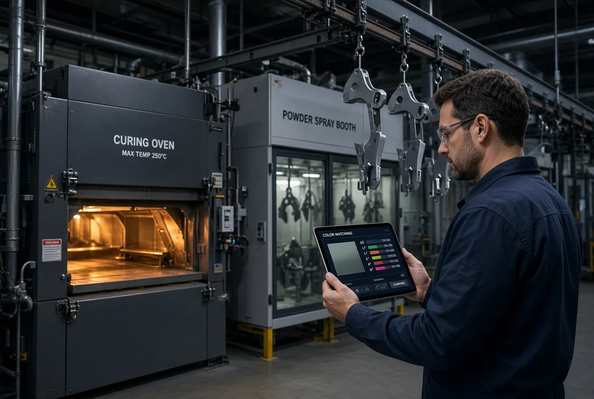
Что получает технолог
Одно рабочее место у линии: замер, график, подсказка по колоранту, история правок. Меньше проб «на глаз», быстрее выход на цвет и меньше повторных переделок.
Что это даёт предприятию
Быстрее запуск
Цвет подбирается за меньшее число итераций, партия выходит на линию раньше.
Меньше брака
Отклонение видно в цифрах и на графике ещё до окраски изделий.
Экономия колоранта
Доза считается точно, а не «на глаз», поэтому меньше перерасхода и пересортицы.
Одинаковый результат
Разные технологи и смены работают по одной логике, а история замеров сохраняется.
Химический модуль: состав и нагрев
Опциональный модуль. Нейросеть сравнивает рецептуру с эталонной и вычисляет результат при смещении ингредиентов и нагреве. Если модуль будет добавлен в проект, выполняется расчёт химического состава.
- цвет: отклонение ΔE и сдвиг по яркости и жёлтому тону;
- блеск, степень отверждения, индекс стойкости плёнки;
- риск пригорания при выбранной температуре и времени;
- соотношение смолы и отвердителя, рекомендация по корректировке;
- карта режимов: где рабочее окно, где недоотверждение, где риск пригорания.
Сдвиг ингредиентов
Технолог смещает долю ингредиентов, а система сразу показывает, как изменятся цвет, блеск и отверждение, и сравнивает с эталонной рецептурой. Рекомендации подсказывают, что поправить.
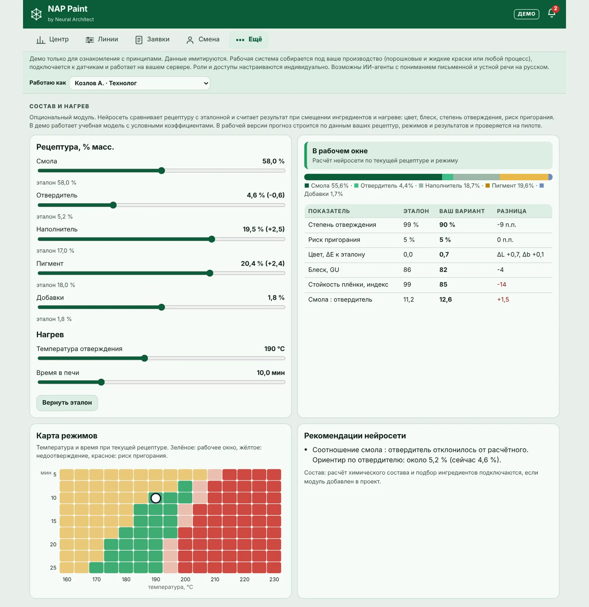
Нагрев и риск пригорания
При повышении температуры и времени система показывает риск пригорания и желтизны. Карта режимов отмечает рабочее окно, и точка режима видна на ней. После обучения на данных предприятия система может заранее предупреждать о риске пригорания.


Скриншоты демонстрационной версии: используется учебная модель с условными коэффициентами. В рабочей версии прогноз строится по данным ваших рецептур, режимов и результатов. Точность проверяется на пилоте и зависит от объёма и качества данных.
Как нейросеть читает состав и предсказывает нагрев
Два экрана демо с одним составом: в первом меняется рецептура, во втором растёт температура. Цифры считает учебная модель с условными коэффициентами. В рабочей версии её обучают на данных вашего производства.
На входе модель получает доли пяти ингредиентов, температуру и время в печи. На выходе: степень отверждения, риск пригорания, сдвиг цвета ΔE, блеск и индекс стойкости плёнки. Эталонную рецептуру модель считает тем же способом, поэтому разница в таблице честная.
Пример 1. Сдвинули рецептуру, режим не трогали
- 1
Вход: рецептура. Отвердителя на 0,6 п.п. меньше эталона (4,6 % вместо 5,2 %), наполнителя и пигмента больше на 2,5 и 2,4 п.п. Под каждым ползунком показан эталон.
- 2
Вход: нагрев. 190 °C и 10 минут. Режим из эталона, поэтому результат объясняется только рецептурой.
- 3
Выход: сравнение с эталоном. Отверждение 90 % против 99 %, ΔE 0,7, блеск 82 против 86 GU, индекс стойкости 85 против 99. Риск пригорания остался 5 %. Соотношение смола : отвердитель ушло с 11,2 до 12,6.
- 4
Карта режимов. Модель считает эту же рецептуру для каждой пары «температура × время». Зелёное — рабочее окно, жёлтое — недоотверждение, красное — риск пригорания. Белая точка — выбранный режим, она в зелёной зоне.
- 5
Рекомендация. Отвердителя меньше расчётного, ориентир около 5,2 % вместо 4,6 %.
12345Пример 2. Рецептура эталонная, температуру подняли
- 1
Вход: рецептура. Все ползунки на эталоне, разницы по составу нет.
- 2
Вход: нагрев. 212 °C (на 22 °C выше эталона) и 14 минут.
- 3
Выход: сравнение с эталоном. Риск пригорания вырос с 5 % до 100 %. Цвет ушёл на ΔE 5,2: темнее на 1,9 по L* и жёлтее на 4,8 по b*. Блеск упал на 10 GU. Отверждение и стойкость по 100 — формально выше эталона, но риск и цвет показывают, что режим вышел за рабочее окно.
- 4
Карта режимов. Точка попала в красную зону. Зелёная зона для этой рецептуры лежит левее, при меньшей температуре.
- 5
Рекомендации. Снизить температуру или время, проверить скорость конвейера. Для цвета: вернуть доли пигмента и наполнителя ближе к эталону или подготовить корректировку.
Демонстрация принципов. В рабочей версии — ваши компоненты, допуски и расчётные модели.
Упрощённые обозначения типичных компонентов порошковых и жидких систем. Реальные промышленные рецептуры сложнее и часто являются коммерческой тайной.
Контроль производства и журналы
Вторая часть решения: контроль параметров, отклонения и журналы. Логика универсальная и изначально отработана на реальном производстве. Ниже скриншоты рабочей системы ZHUR, она адаптируется под любое предприятие.
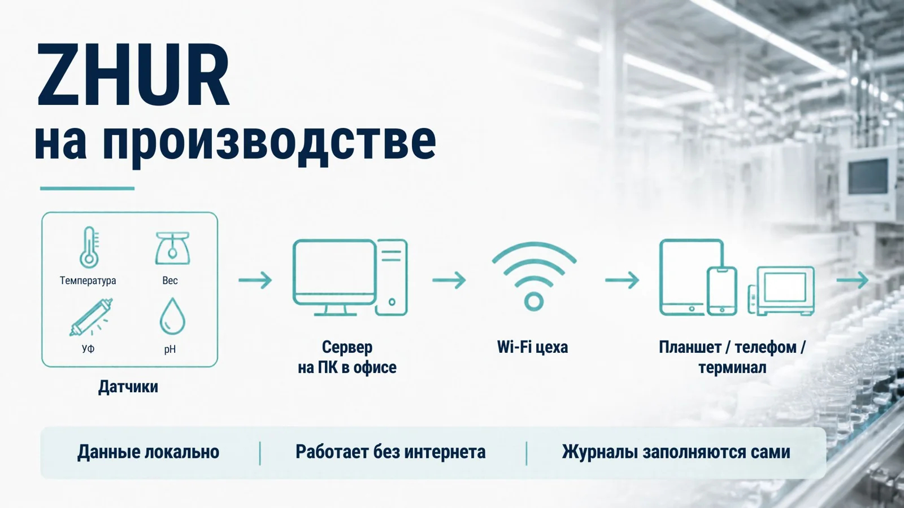


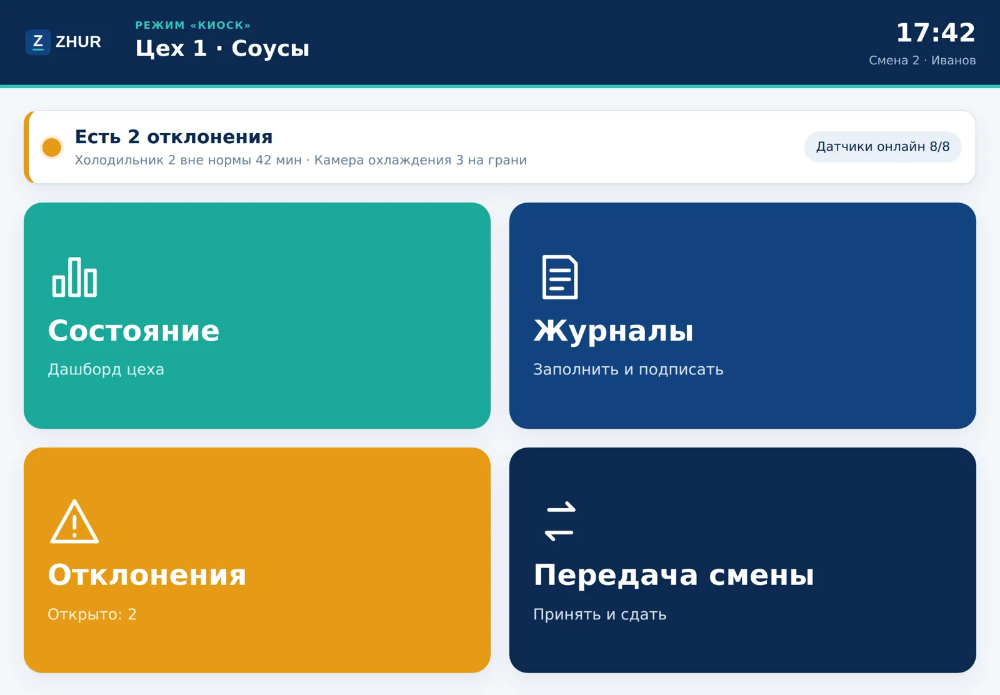
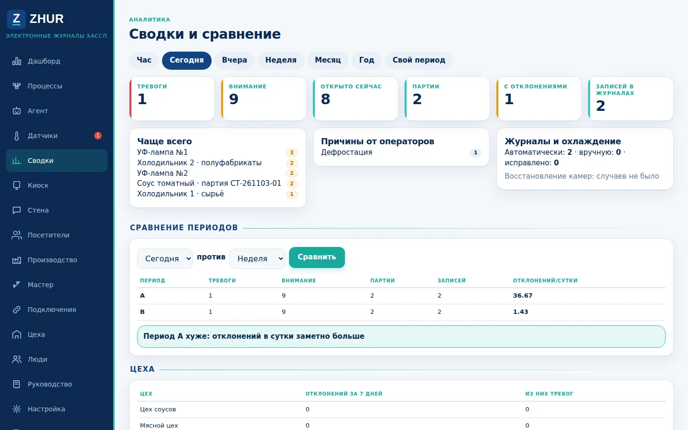


Система в работе: от заявки до готовой партии
Единая картина для всех участников: заявки, задачи, рецепты, премиксы, корректировки, линии, операторы, отходы, простои, температуры и журналы. Ниже скриншоты демонстрационной версии. Этапы, роли и нормы настраиваются под процессы конкретного предприятия.
Открыть интерактивное демо Открыть демо коррекции цвета Презентация программыВ демо можно переключать роли («Работаю как»), двигать заявку по этапам, вносить данные оператора и запускать сценарии отклонений. Данные в демо имитируются.
Центр управления
Сводка по производству: тревоги, внимание, датчики онлайн, заявки и линии в работе, число корректировок на заявку. Каждое отклонение сопровождается подсказкой, что проверить, и кнопками «Принял» и «Не критично».
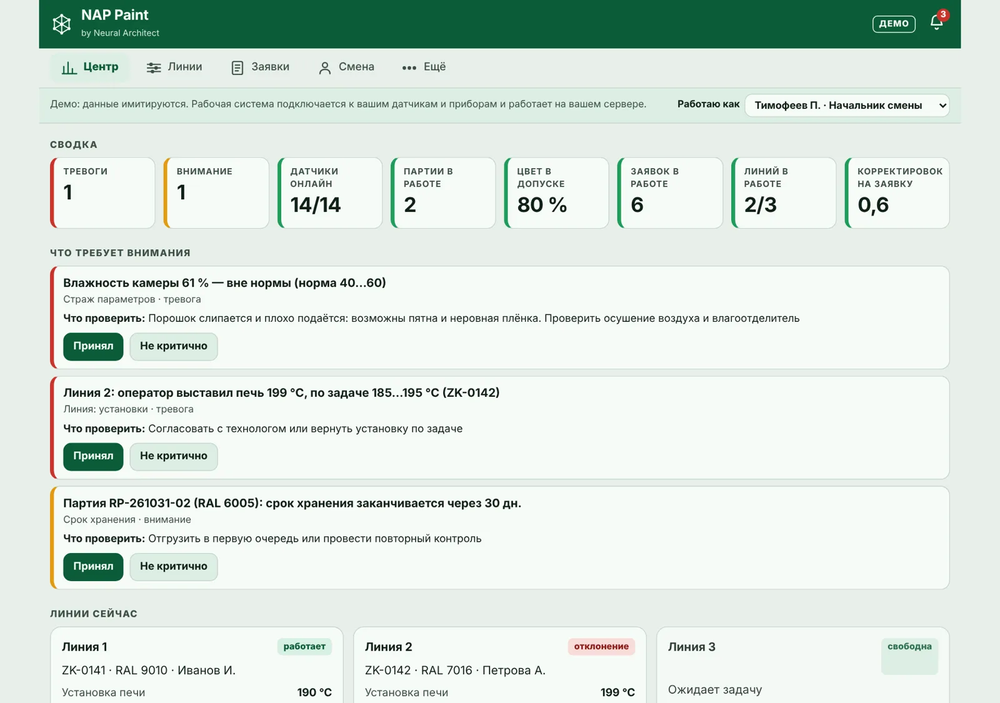
Путь заявки
Заявка проходит этапы: обработка, задача технологу, рецепт, премикс (малый или большой), проверка и корректировки, запуск на линии, контроль качества. На каждом этапе отвечает своя роль и видит только свои задачи: «Ждут меня».

Заявка подробно
Рецепт, размер премикса, режим на линии по задаче, список корректировок, история действий и комментарии участников. Ничего не теряется между технологом, премиксом и линией.
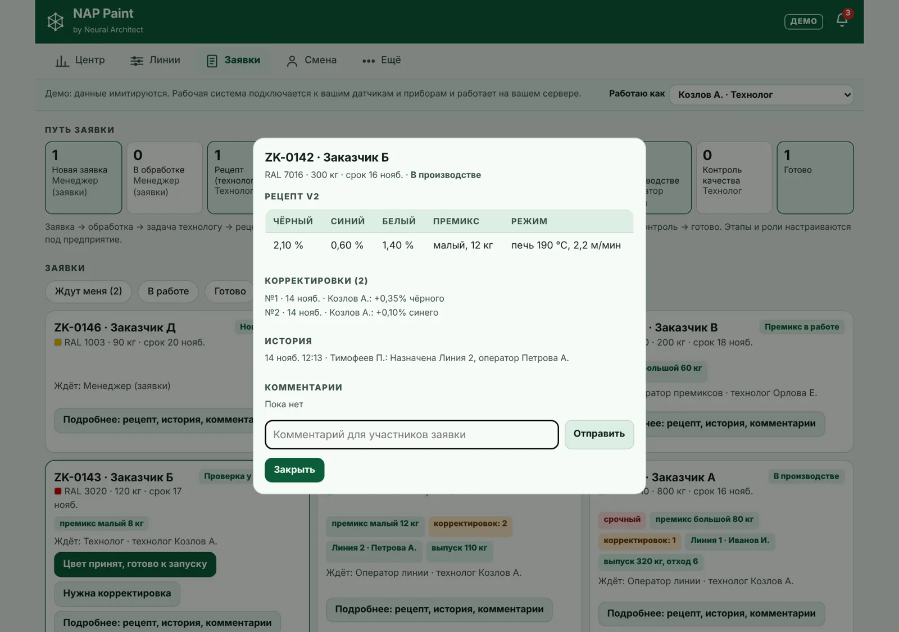
Линии и установки операторов
Видно, какая линия работает, какая свободна, чем занята и кто оператор. Для каждой линии рядом: режим по задаче, установка оператора и реальная температура в данный момент. Если оператор выставил значение вне задачи или факт расходится с установкой, система сразу показывает отклонение.
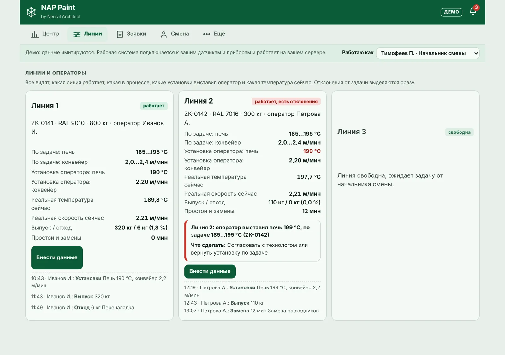
Оператор вносит данные с телефона
Выпуск, отходы с причиной, простои, замены, установки и заметки. Каждая запись попадает в журнал с именем и временем. Оператор вносит данные только по своей линии, начальник смены по любой.
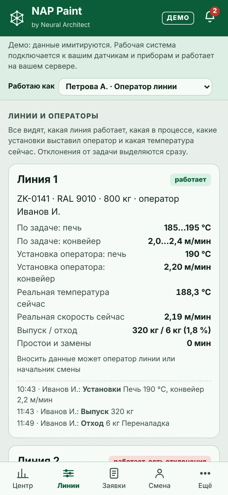

Смена и персонал
Кто сейчас на смене, на какой линии и сколько часов отработано, табель за период. Итоги смены: выпуск, отходы, простои. Начальник смены передаёт смену одной записью, в которую автоматически попадает число открытых отклонений.
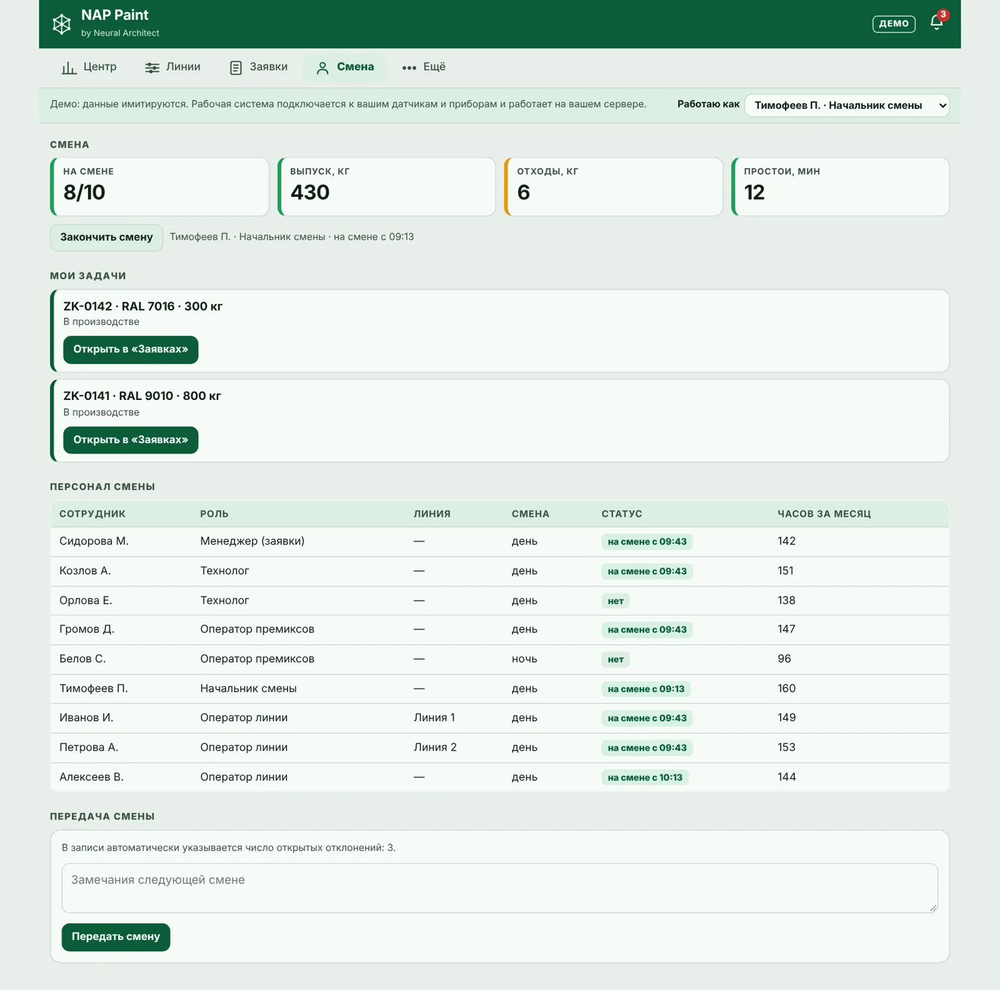
Роли и доступ
Права каждой роли настраиваются индивидуально: доступ к разделам, действия, этапы заявки, которые ведёт роль. Можно добавлять собственные роли, например «Контролёр качества» или «Лаборант», и назначать их сотрудникам. Каждое изменение доступа попадает в журнал.

Премиксы: малые и большие
Отдельная очередь для оператора премиксов: большие и малые премиксы, рецепт и масса, корректировки с пояснением технолога. После готовности технолог получает сообщение и проверяет цвет.
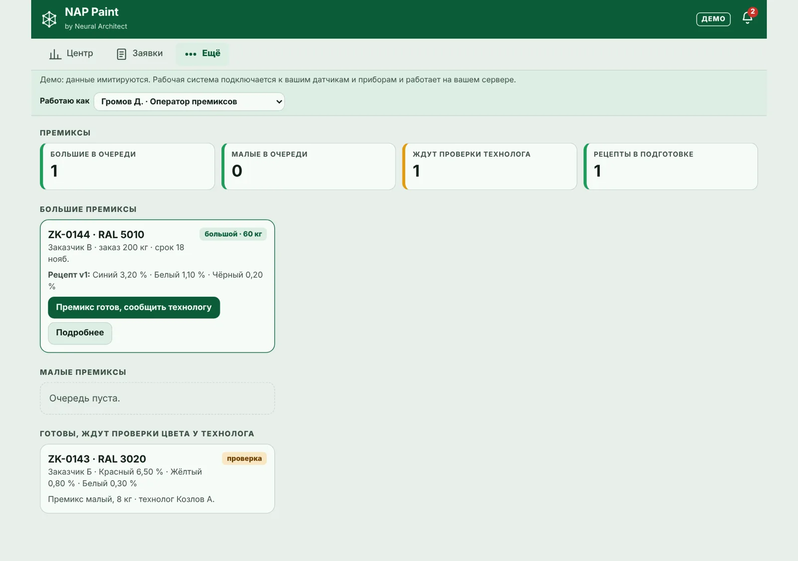
Аналитика производства
Выпуск и отходы по линиям, причины отходов, простои и замены, число корректировок по заявкам. Видно, где теряется время и материал. Набор отчётов согласуется при составлении ТЗ.

Партии и паспорт качества
Готовая продукция по партиям: цвет, поверхность, масса, срок годности, результат контроля цвета. Паспорт качества и этикетка печатаются по форме предприятия. Форма документа и набор полей согласуются при составлении ТЗ.


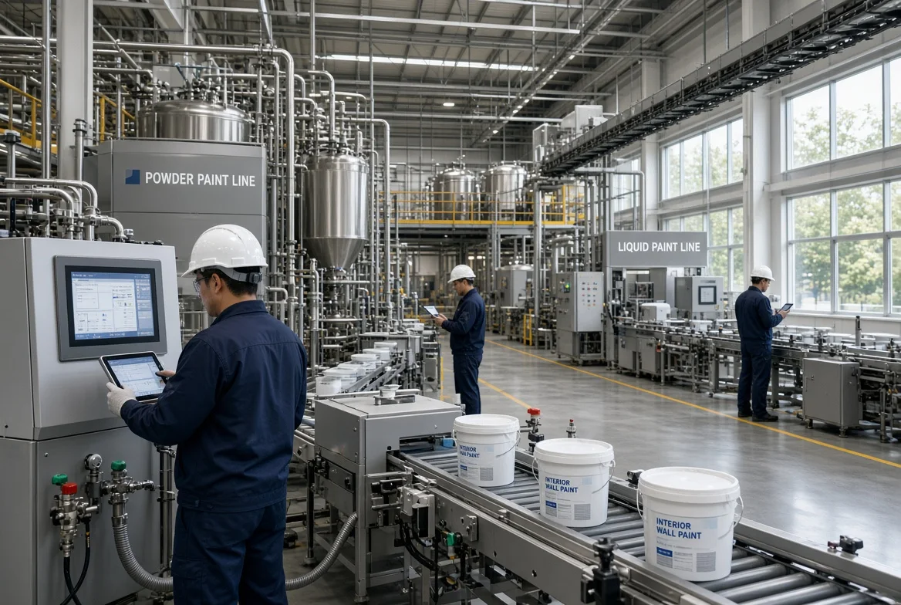
Помощник технолога
Отвечает по текущему состоянию производства: что не так, какие возможны причины, что проверить. Возможны ИИ-агенты с пониманием письменной и устной речи на русском. Глубина помощника и регламенты, на которых он работает, определяются задачей.

Журналы
Все действия людей и отклонения датчиков сохраняются: кто, когда и что сделал. Фильтры по заявкам, операторам, сменам и тревогам, выгрузка в CSV для проверок и отчётов.
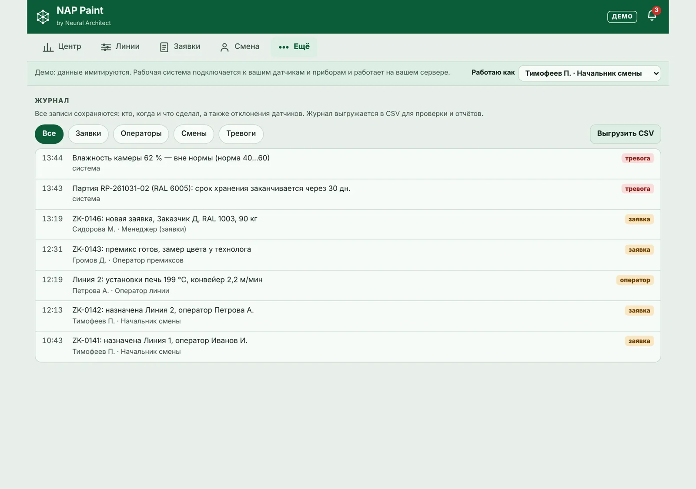
Датчики в реальном времени
Температуры, скорость конвейера, влажность камеры, аспирация, толщина покрытия, цвет. Для каждого параметра норма, график за последние минуты и прогноз выхода за границу ещё до появления брака.
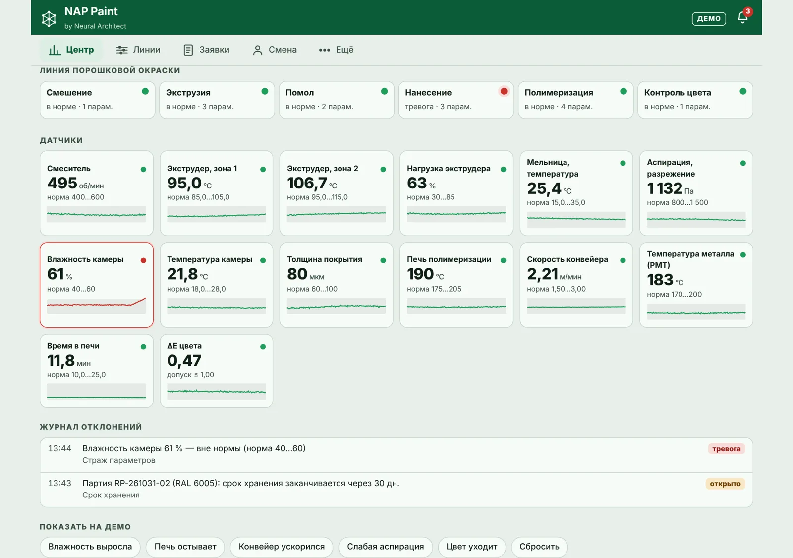
Коррекция цвета
Модуль для работы со спектрофотометром: график a*b*, подсказка, какой колорант и сколько процентов добавить. Меньше корректировок и быстрее выход на цвет.
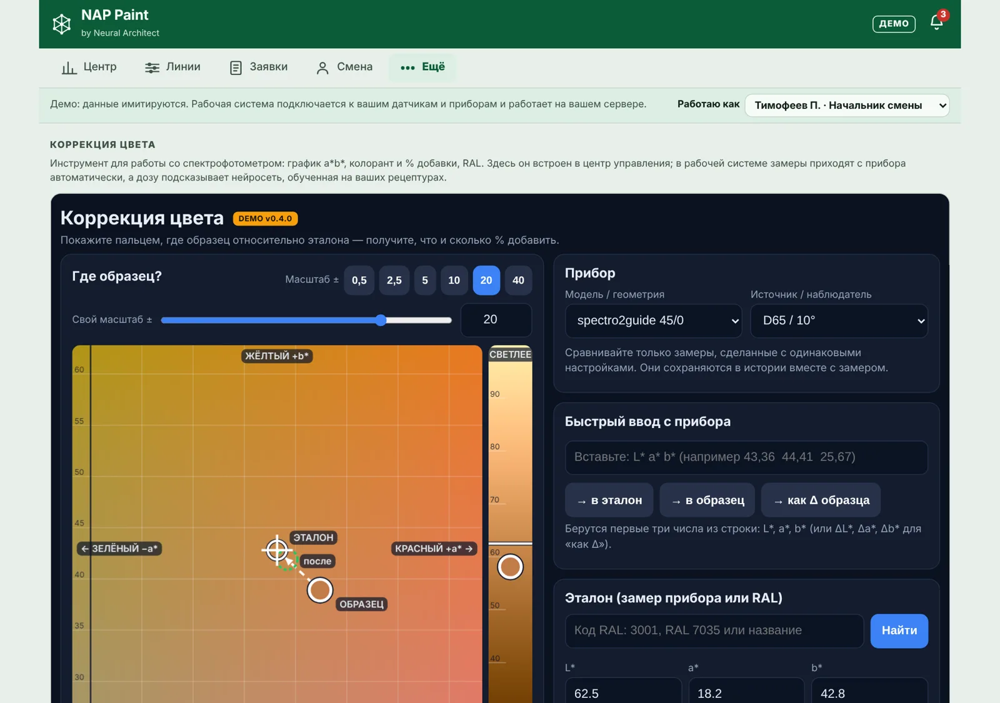
Кто что делает
Базовые роли показаны как пример. Для вашего производства роли создаются индивидуально: доступ каждой роли можно отредактировать и расширить.
Менеджер
Принимает и обрабатывает заявки, формирует задачи.
Технолог
Составляет рецепт, задаёт режим, проверяет цвет, назначает корректировки.
Оператор премиксов
Делает малые и большие премиксы, сообщает технологу о готовности.
Начальник смены
Назначает линию и оператора, контролирует смену, передаёт смену.
Оператор линии
Выставляет установки, вносит выпуск, отходы, простои и замены.
Администратор
Настраивает роли, этапы, нормы и доступы.
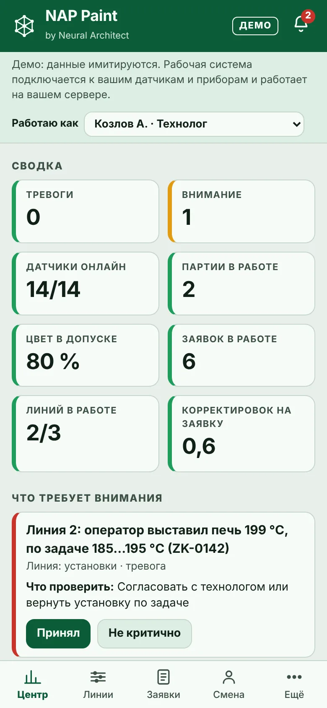

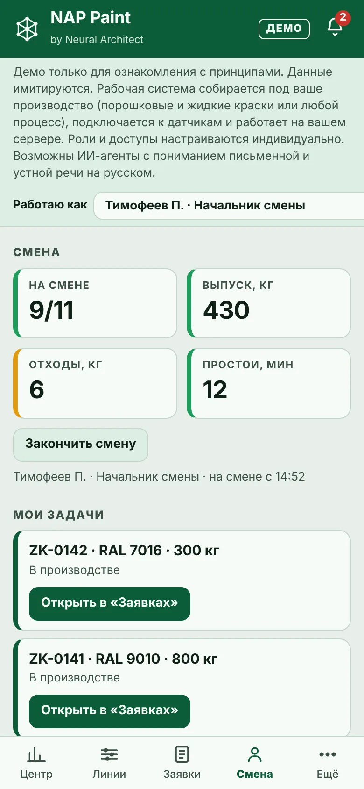
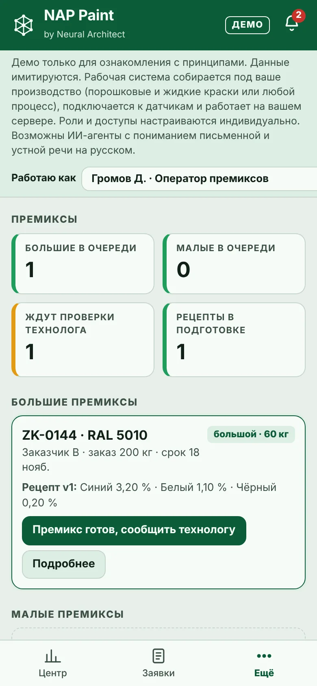
Скриншоты сделаны в демонстрационной версии: данные имитируются, имена и заказчики вымышленные. Названия этапов, роли, нормы и поля настраиваются под процессы предприятия.
Единая система или отдельные модули
Контроль качества и безопасности продукции можно внедрить целиком: меньше брака, меньше корректировок, быстрее запуск и выше производительность. Либо внедрять модули по одному, под конкретную задачу.
Цвет и коррекция
Спектрофотометр, RAL, расчёт колоранта и дозы. Меньше корректировок.
Процесс и датчики
Смешение, экструзия, помол, нанесение, печь. Прогноз отклонений до появления брака.
Партии и прослеживаемость
Номер партии, паспорт качества, этикетка, срок хранения.
Безопасность
Контроль параметров, влияющих на безопасность: аспирация, температуры, журнал отклонений.
Помощник технолога
Подсказывает причины отклонений и порядок проверки. Работает на вашем сервере.
Нейросети подбираются под задачу
Одна самая большая сеть на все задачи не нужна и не всегда лучше. В системе работает набор моделей, каждая под свою задачу. Всё работает на вашем сервере локально, данные остаются на предприятии.
Прикладные нейросети
Прогноз отклонений по датчикам, подбор дозы колоранта, поиск аномалий, прогноз брака, настройка под каждую линию. Для отдельных задач — компактные модели. Для комплексной системы (цвет + процесс + прогноз + агенты) ориентир — от сотен миллионов до 1+ млрд параметров. Требуется сервер с GPU.
Модели свойств продукции
Прогноз результата по составу и режиму: цвет, блеск, отверждение и другие показатели, с учётом химии и технологии. Обучаются на ваших рецептах и результатах, могут сочетаться с расчётными методами. От десятков миллионов до сотен миллионов и выше в зависимости от объёма данных и задач.
Языковая модель
Помощник на русском (текст, при необходимости голос), работа с технологическими картами, регламентами и документами. Здесь используются модели в миллиарды параметров: нужен сервер с видеокартой.
Масштаб прикладных нейросетей
Число параметров характеризует размер сети, а не качество. Прогноз по составу и технологическим режимам упирается в объём и качество ваших данных: размер модели подбирают экспериментом, начиная с компактной и увеличивая, пока это улучшает результат. Каждая линия имеет свои особенности: используется общая модель с настройкой под конкретную линию. Что можно надёжно предсказывать, определяется на пилоте по истории ваших рецептов и результатов. Демонстрационная версия центра управления показывает принцип: данные в ней имитируются.
Комплексная система: видит процессы и предупреждает заранее
Если программа комплексная, могут использоваться модели с высокой вычислительной мощностью: сервер с графическими ускорителями на вашем предприятии.
Компьютерное зрение
Камеры и, при необходимости, тепловизоры наблюдают за процессами на линиях. Система замечает отклонения, перегрев оборудования и нарушения режима.
Предупреждение заранее
После обучения на данных вашего предприятия система может заранее предупреждать о риске пригорания и перегрева. Это помогает снизить брак и избежать поломок оборудования.
Локальная база данных
Вся база данных хранится на вашем сервере, данные не уходят наружу.
Коммерческая тайна
Все наработки предприятия — рецептуры, режимы, данные, обученные модели — остаются коммерческой тайной предприятия.
Индивидуально
Программа создаётся индивидуально под ваше производство, оборудование и задачи.
Точность предупреждений зависит от объёма и качества данных и проверяется на пилоте. Состав комплексной системы определяется при составлении технического задания.
Чем отличается от готовых решений
Готовые решения хорошо закрывают свою часть задачи. Индивидуальная система объединяет цвет, производство, роли, документы и помощника в одном месте и подстраивается под процесс предприятия.
| Возможность | Готовое цветовое ПО | Типовая MES и диспетчеризация | Индивидуальная система |
|---|---|---|---|
| Коррекция цвета под ваши колоранты и прибор | Сильная сторона | Как правило, нет | Под вашу базу колорантов, прибор и рецептуры |
| Заявки, смены, линии, партии | Ограниченно | Да, в типовом виде | Под ваши этапы, статусы и поля |
| Датчики и тревоги в реальном времени | Нет | Да | Да, с прогнозом отклонений |
| Роли и доступы | Базовые | Типовые наборы | Индивидуальные, редактируются и расширяются |
| Этикетки и паспорта качества | Часто отдельным модулем | Часто отдельным модулем | В составе системы, по вашей форме |
| Помощник на русском (текст, при необходимости голос) | Как правило, нет | Как правило, нет | Возможен, работает на ваших регламентах |
| Работа на вашем сервере без интернета | Зависит от поставщика | Зависит от поставщика | Да, по требованию предприятия |
| Подстройка под ваш процесс | В рамках настроек продукта | В рамках настроек продукта | Основа подхода |
Обобщённое сравнение типов решений, а не оценка конкретных продуктов. Возможности готовых решений зависят от поставщика и версии.
Что влияет на состав работ
- количество и тип оборудования, приборов и датчиков, которые нужно подключить;
- наличие исторических данных для обучения нейросети;
- масштаб нейросети: компактная модель или более мощная;
- глубина помощников: подсказки или выполнение задач, текст или голос;
- количество ролей и сложность прав доступа;
- требования к локальной работе, безопасности и отчётности.
Внедрять можно поэтапно: сначала пилотный участок, затем расширение на остальное производство. Все эти вопросы обсуждаются при составлении технического задания.
Сроки и формат работы
Программа создаётся индивидуально под конкретное производство и его особенности: задачи, приборы, линии, базу колорантов, процессы и сотрудников.
Итоговый срок формируется индивидуально после составления технического задания и зависит от числа модулей, сложности интеграций и объёма данных.
Состав ролей и прав доступа, этапы процессов, отчёты и всё необходимое для работы согласуются при составлении технического задания (ТЗ).
Работаю с юридическими лицами (ООО, ИП и др.) по договору. Варианты: разработка под ключ или передача прав.